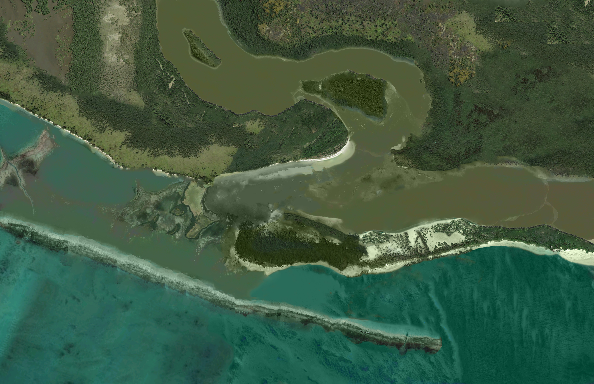
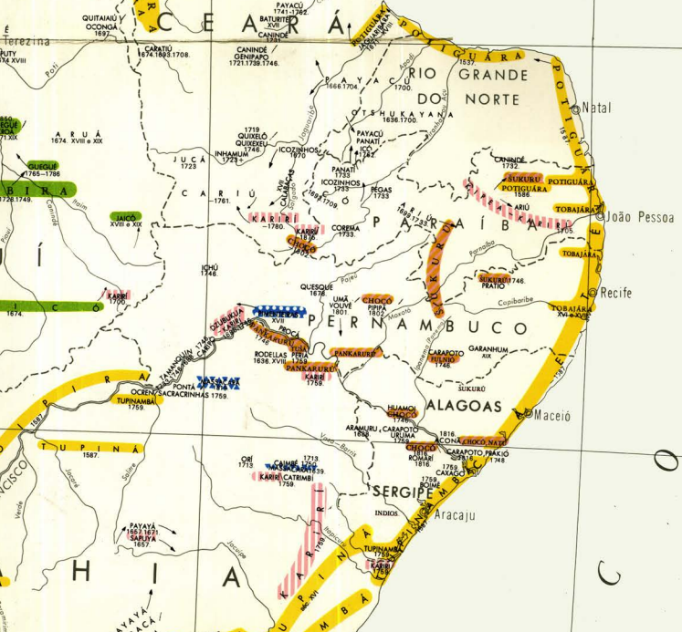
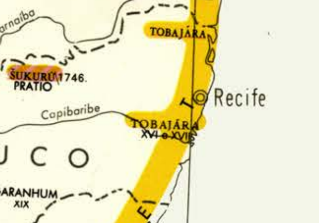

🦀 De onde saiu esse povo?
Nesse texto inicio a construção (ou desconstrução?) do personagem principal da história do Recife: seu povo. Também vou tentar me situar enquanto pessoa que escreve isso. Ainda estou aprendendo, a medida que entro em contato com um novo documento ou descubro um detalhe em outro e, principalmente, quando observo e participo da dinâmica da cidade.
A noção recifense de povo ainda está em processo de construção. Não fomos constituidos sob uma unidade de fato. Fica mais fácil de entender analisando a história, juro. Não preciso falar muito também para vos lembrar que somos uma cidade formada por indígenas, africanos, europeus e por outras etnias. Se essas origens soam distantes para você, essa sensação é proposital. Tudo é muito característico da construção do Recife. Por que é que a maioria da população não se declara negra, nem branca, nem indígena mas parda?
Reprodução da natureza original do atual centro do Recife
por {{ page.author }} em {{ page.date | date: "%d/%m/%Y" }}.
A história do Recife anterior aos europeus se registrou de muitas formas, mas vou trazer primeiro relatos escritos sobre a gente que eles se depararam. Quando você analisa os documentos sabendo da intenção europeia por aqui, você acaba descobrindo um ser nativo completamente diferente do clichê do índio. Esse clichê se perpetua, e podemos questioná-lo a fim de descobrirmos mais sobre nós mesmos e de como o Recife se organizou. Vamos nos aproximar das nossas origens nativas sem medo, desfazendo o projeto de afastamento do que não é europeu para reconstruir a cidade do passado (e planejar a cidade do futuro).
Ainda antes de contar o primeiro relato, aqui vai um panorama da costa de parte do nordeste do Brasil em um mapa da autoria de Curt Nimuendajú (1944) para entendermos os nomes das nações que aqui se estabeleciam:
Recorte do grande mapa etno-histórico de Curt Nimuendaju
Os europeus não tinham noção alguma de como se configuravam os povos originais. Seus registros se confudem um pouco, principalmente os mais próximos ao ano de 1500. Nimuendaju reuniu em seu trabalho uma compilação de várias descrições na elaboração de um grande mapa do Brasil original. E assim como contam os relatos, os Caetés povoavam a região da foz do São Francisco até a área entre o rio Capibaribe-Mirim, divisa dos atuais estados da Paraíba com Pernambuco. Da Paraíba ao Ceará, acompanhando a costa, viviam os Potiguares. E, entre os Caetés, Nimuendaju registrou alguns povos a quem chamavam Tabajaras (cuja grafia varia pra caramba).
Aproximação sobre o litoral pernambucano
No recorte acima, o Recife aparece um pouco deslocado para norte (talvez onde seria Olinda). É possível perceber um zigue-zague na foz do Capibaribe (falaremos dele em outro momento, prometo) e uma ilha ainda mais ao norte.
Há uma hipótese de origem branca, registrado por frei Antônio de Santa Maria Jaboatão no século 18 sobre a origem de parte dos povos do Brasil, incluindo a origem dos Caetés. Não entrarei no mérito de discutir se essa é a teoria aceita, apenas trago o texto como uma alegoria da origem do povo do Recife. Há muita informação nele e portanto voltaremos a comentá-lo no futuro. O relato a seguir está carregado de política colonial x nativa e contém informação subentendida sobre a configuração original dos povos e das relações entre si.
Na primeira parte do livro Novo Orbe Seráfico Brasílico*, o frei dedica seções a cada uma das nações conhecidas naquele momento e, por fim, dedica uma última seção ao povo tabajara. É daqui de onde sai nosso relato, a origem dos povos da costa do nordeste do Brasil.
Adaptei o relato para um português mais acessível, uma vez que o original encontra-se em uma grafia muito antiga.
Por não acharmos em toda a costa do Brasil um lugar determinado a esta nação, como as outras tem, deixamos ela por último. Mas isso não tira a importância que lhe daremos entre as outras como nação principal ou primeira de toda essa costa. Ela pelo menos disso se vangloria, e muito. Parece que para isso tem grandes e fortes razões. A primeira, e fundamental, tem eles na etimologia de seu nome: Taba-yará, porque na sua língua yara quer dizer “senhor” e taba significa “rosto” ou “face”. Quer dizer o nome Tabajara que eles são os “senhores do rosto” ou “face da terra”. Face, ou rosto da terra, é como chamam toda a fronteira e a costa marítima […].
Eles se encontram em muitas partes dessas costas que, no tempo dos portugueses, ainda habitam. Por toda a costa, ainda que espalhados, encontramos eles: no Pará uns poucos, outros no Maranhão, na Paraíba, Pernambuco, Bahia e em outros lugares até contestar [território] com os Tamoios depois do Espírito Santo.
Demonstração certa de que em algum tempo povoaram sozinhos todas as costas e que, ao mesmo tempo, as outras nações foram com eles crescendo e sobrevivendo as recorrentes guerras. Era gosto dessa gente ir ocupando os melhores lugares em que outros já habitavam e isso os dividia e introduzia entre eles outras nações.
Aqui, o relato conta que, do encontro e das desavenças com os tamoios, os tabajaras se dividiram em dois grupos. O primeiro era ramo mais novo da nação e eles migraram ao sul:
[…] Estes, diziam eles, foram os primeiros povoadores das províncias de Buenos Aires, Chile, Quito, Peru e as demais Índias da Espanha.
O segundo, o ramo mais antigo:
A do mais velho, que ficou em Cabo Frio, crescendo em gente, foi-se espalhando para o norte, pela costa da Bahia, porque acharam essa melhor. […] Deles procedeu um famoso ramo, ou principal índio, chamado Tupi, que foi o povoador da terra filme do Cairú e de outros derivados do seu nome com outras terminações no seu idioma. Chamam-se Tupinambás, Tupiniquins, Tupivás. […] Estenderam-se com suas famílias os tabajaras e os tupinambás da Bahia ao Pará, por onde com o tempo foram se estendendo mais, onde ao mesmo tempo derivaram-se muitos ramos como o Potiguar, Caeté e outros, separando-se dos seus ascendentes. Crescendo em povo, inimizades e guerras foram se introduzindo pelas costas do Brasil, expulsando os tupinambás e tabajaras, que ficaram espalhados por todos os lugares como os encontramos.
Há uma intenção política na descrição portuguesa dos tabajaras como a principal de todas as nações. Os tabajaras serão os primeiros aliados dos portugueses em Pernambuco e portanto eles foram descritos dessa maneira, em posição elevada comparada as outras nações. A nomenclatura tabajara/caeté se confunde nos relatos dos primórdios das invasões de Pernambuco, mas aqui há uma distinção clara: os tabajaras se tornarão amigos dos portugueses, os caetés não.
Eu acho muito difícil escrever sobre essa época porque a descrição portuguesa definiu o modo que conhecemos as culturas nativas hoje, nesse lado do Brasil. São povos que resistem a todo tipo de apagamento, que nunca acabou, apenas se ressignificou. As descrições das outras nações europeias e as heranças nativas na nossa cultura mostra um lado diferente que precisamos explorar. E então, preciso ultrapassar um limite aqui para comentar que as nações indígenas desse litoral hoje não são as mesmas daquela época. E claro, não é por culpa delas. Como veremos, não haverá escolha. A imposição do poder branco não vai abrir espaço para a manutenção dessas culturas como elas eram e a cultura nativa será, pouco a pouco, distorcida ao longo dos anos. E é por isso que a população parda será um assunto recorrente.
ao professor Ricardo Pinto de Medeiros, doutor em história pela UFPE, por seu trabalho de revisão da vida dos povos originais e suas relações com os invasores europeus. Esse post tem muita informação retirada de um artigo dele* onde indexa vários momentos onde esses povos são citados nos relatos iniciais sobre Pernambuco. Se algum dia você encontrar esse post pelo Google, obrigado!